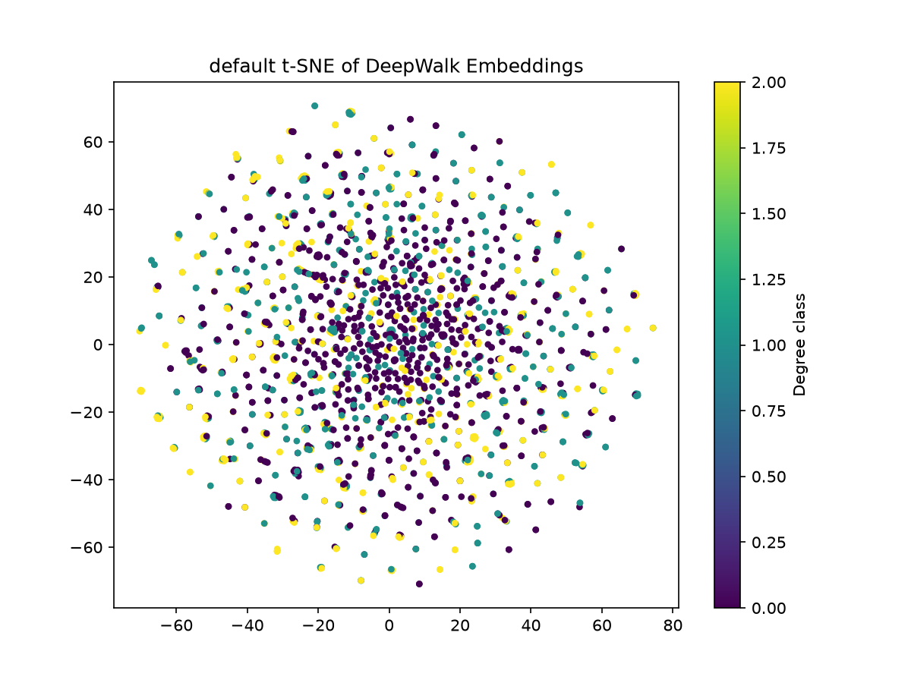

基于 TuGraph 图数据库平台，完成图数据的建模、导入、查询与分析，应用至少 2 种图算法（其中 1 种为节点嵌入），验证图算法在真实数据集上的有效性。
| 项目 | 配置 |
|---|---|
| 操作系统 | Ubuntu (Dell Inspiron 14 Plus 7420) |
| GPU | NVIDIA GeForce RTX 3050 (4GB) |
| 图数据库 | TuGraph 社区版 V4.5.1（Docker 部署） |
| 开发语言 | Python 3.11 |
| 主要依赖 | neo4j-driver, gensim, networkx, scikit-learn, matplotlib |
| 容器端口 | 7070 (Web), 7687 (Bolt), 9090 |
以 Amazon 图为例，定义点类型 node：
CALL db.createVertexLabel('node', 'node_id',
['node_id', 'INT32'],
['feature', 'STRING', true]
)
node_idfeature（STRING 类型，存储 128 维 DeepWalk 向量）CALL db.createEdgeLabel('co_purchase', '[[node, node]]')
使用 Python neo4j 驱动通过 Bolt 协议批量写入：
with driver.session(database="default") as session:
session.run("CALL db.upsertVertex('node', $nodes)", nodes=batch)
共导入 13,178 个节点，33,768 条边。
DeepWalk 将自然语言处理中的 Word2Vec 思想应用于图结构：
随机游走参数：
训练参数：
核心代码：
# 随机游走
def random_walk(G, start_node, walk_length):
walk = [start_node]
cur = start_node
for _ in range(walk_length - 1):
neighbors = list(G.neighbors(cur))
if not neighbors:
break
cur = random.choice(neighbors)
walk.append(cur)
return walk
# PyTorch Skip-gram（GPU）
class SkipGram(nn.Module):
def __init__(self, vocab_size, embed_dim):
super().__init__()
self.in_embed = nn.Embedding(vocab_size, embed_dim)
self.out_embed = nn.Embedding(vocab_size, embed_dim)
feature 字段0.208405 -0.080648 0.082029 0.083543 -0.184395
-0.202437 0.242619 -0.144861 -0.680617 0.095045
PageRank 通过迭代计算节点重要性，核心假设：一个节点的重要性取决于指向它的节点的重要性。
迭代公式：
PR(u) = (1-d) + d × Σ(PR(v) / out_degree(v))
其中 d 为阻尼系数（通常 0.85）。
CALL algo.pagerank(20)
YIELD node, pr
RETURN node.node_id AS node_id, pr
ORDER BY pr DESC
LIMIT 10
Amazon 共购网络 Top 10：
| 排名 | 节点 ID | PageRank |
|---|---|---|
| 1 | 12893 | 0.000250 |
| 2 | 12856 | 0.000238 |
| 3 | 13157 | 0.000231 |
| 4 | 12719 | 0.000228 |
| 5 | 13141 | 0.000225 |
| 6 | 13083 | 0.000225 |
| 7 | 13079 | 0.000218 |
| 8 | 13125 | 0.000218 |
| 9 | 11505 | 0.000213 |
| 10 | 12938 | 0.000206 |
DBLP 合作网络 Top 10：
| 排名 | 节点 ID | PageRank |
|---|---|---|
| 1 | 100549 | 0.000096 |
| 2 | 84978 | 0.000057 |
| 3 | 86470 | 0.000053 |
| 4 | 102333 | 0.000052 |
| 5 | 92195 | 0.000052 |
| 6 | 100548 | 0.000051 |
| 7 | 84527 | 0.000049 |
| 8 | 104745 | 0.000043 |
| 9 | 99372 | 0.000038 |
| 10 | 107105 | 0.000038 |
最短路径算法查找两个节点之间边数最少的路径，用于评估图的连通性和"小世界"特征。
MATCH (a:node {node_id: $src}), (b:node {node_id: $dst})
WITH a, b
CALL algo.shortestPath(a, b)
YIELD nodeCount, totalCost, path
RETURN nodeCount, totalCost
DBLP 合作网络：
结果解读：DBLP 中两个最重要的作者之间，只需通过 3 个中间人即可连通，体现了学术合作网络的"小世界"特征。
验证 DeepWalk 嵌入是否有效保留了图的结构信息：
# 按度数分 3 类
deg_df["label"] = pd.qcut(deg_df["degree"], q=3, labels=[0, 1, 2])
# 训练分类器
clf = LogisticRegression(max_iter=1000)
clf.fit(X_train, y_train)
# t-SNE 可视化
tsne = TSNE(n_components=2, random_state=42, perplexity=30)
X_2d = tsne.fit_transform(X_sample)
Amazon 共购网络（default 图）：
Node classification accuracy: 0.6457
precision recall f1-score support
low 0.71 0.78 0.74 1231
medium 0.46 0.37 0.41 760
high 0.68 0.72 0.70 645
accuracy 0.65 2636
t-SNE 可视化：不同度数类别的节点在 2 维空间中呈现一定分离趋势，说明 DeepWalk 嵌入有效保留了图的结构信息。

| 任务 | 状态 | 说明 |
|---|---|---|
| 数据建模与导入 | ✅ | 2 个数据集，共 127,273 节点，500,530 边 |
| 节点嵌入 | ✅ | DeepWalk，128 维，13,178 节点 |
| PageRank | ✅ | 2 个数据集均完成 |
| 最短路径 | ✅ | DBLP 数据集 |
| 节点分类 | ✅ | Amazon 数据集，准确率 64.57% |
| t-SNE 可视化 | ✅ | Amazon 数据集 |
db.alterLabelAddFields 批量添加字段split + toFloat 解析| 问题 | 解决方案 |
|---|---|
karateclub 依赖冲突 |
改用 gensim 手写 DeepWalk |
| 训练对内存爆炸（OOM） | 改用 IterableDataset 流式生成 |
TuGraph feature 字段为 null |
用 db.alterLabelAddFields 先加字段 |
YIELD nodeId 报错 |
查 dbms.procedures() 得到正确字段名 node, pr |
EqualNull 函数未实现 |
改用 Python 端统计，避开 TuGraph 聚合函数 |
本实验基于 TuGraph 平台完成了完整的图数据分析流程：数据建模 → 数据导入 → 图查询 → 图算法应用。通过 DeepWalk 节点嵌入、PageRank 中心性、最短路径、节点分类 4 种算法，验证了图算法在 Amazon 共购网络和 DBLP 合作网络上的有效性。
实验证明：